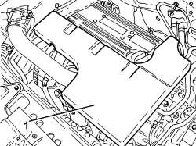
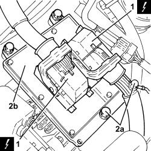
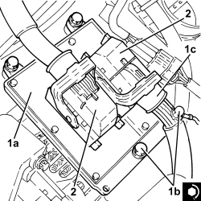
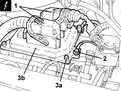

1056B82 INJECTION/IGNITION SYSTEM E.C.U. (ONE) - R + R
- Path
- Procedures > 10 ENGINE > 1056 PETROL INJECTION SYSTEM > 1056B MULTI-POINT INJECTION SYSTEM (MPI) > 1056B82 INJECTION/IGNITION SYSTEM E.C.U. (ONE) - R + R
- Kind
- repair procedure (removal / refitting; the operation number is the code)
- Applies to
- engines: 1.8, 2.2; all production periods
- Interactive page
- https://sloeber94.github.io/elrnDB-fCrm/en/#/194000321
Applies to: engines: 2.2; all production periods
 Removing
Removing
 Refitting
Refitting- Position the vehicle on a lift.
- Make sure that the ignition key is in the OFF position, then disconnect the battery terminal (-).
Description | Connector | |
|---|---|---|
- | Battery |
1. Remove the sound insulation cover fastened to the engine by three pins.

Applies to: engines: 2.2; all production periods
1. Loosen the band and disconnect the engine oil vapour recovery pipe from the cylinder head cover.
2. Loosen the bands and remove the air supply hose from the air flow meter to the throttle casing.

Applies to: engines: 2.2; all production periods
1. Disconnect the electrical connections from the injection/ignition system control unit.
Description | Connector | |
|---|---|---|
1 | Engine management control unit |
2. Undo the bolts (2a) and remove the injection/ignition system control unit (2b).

Applies to: engines: 2.2; all production periods
Refitting
Removing1. Place the injection/ignition system control unit (1a) in its housing and secure it tightening the bolts (1b) to the recommended torque.
Component | Fastening | dia | Value (daNm) | Validity |
|---|---|---|---|---|
Injection/ignition system control unit | Bolt | M6 x 1 | (air chamber side) 0.9 | 2.2 |
2. Connect the electrical connections to the injection/ignition system control unit.

Applies to: engines: 2.2; all production periods
- Place the air supply hose from the air flow meter to the throttle casing back in its housing and secure it using the bands.
- Connect the engine oil vapour recovery pipe to the cylinder head cover and secure it using the band.
- Place the sound insulation cover back in its housing and secure it to the engine using the three pins.
- Connect the negative battery terminal.
- Remove the vehicle from the lift.
Applies to: engines: 1.8; all production periods
Removing
Refitting1. Disconnect the electrical connections for the injection/ignition system control unit.
Description | Connector | |
|---|---|---|
1 | Engine management control unit |
2. Undo the bolt and release the earth lead from the control unit.
3. Undo the bolts (3a) and remove the injection/ignition system control unit (3b).

Applies to: engines: 1.8; all production periods
Refitting
Removing- Place the injection/ignition system control unit in its housing and secure it tightening the bolts to the recommended torque.
Component | Fastening | dia | Value (daNm) | Validity |
|---|---|---|---|---|
Injection/ignition system control unit | Bolt | M6 | 0.8 ÷ 1.0 | 1.8 |
- Connect the earth lead and secure it using the bolt.
- Connect the electrical connections for the injection/ignition system control unit.
Topics linked from this page (2)
Topics that link to this page (21)
- B007 IGNITION KEY CANNOT BE ACKNOWLEDGED
- B010 ENGINE DOES NOT START (UNDER ANY CIRCUMSTANCES)
- B020 ENGINE STARTS, AND CUTS OUT STRAIGHT AWAY
- D001 ENGINE NOT RUNNING SMOOTHLY / (HESISTANT)
- D002 ENGINE NOT RUNNING SMOOTHLY / (LOSING POWER)
- D003 ENGINE NOT RUNNING SMOOTHLY / (IRREGULAR OPERATION)
- D010 ENGINE IDLE IRREGULAR
- D021 ENGINE CUTS OUT WHILST RUNNING (THEN RESTARTS)
- D070 CRUISE CONTROL NOT WORKING UNDER ANY CONDITIONS
- D073 CRUISE CONTROL DOES NOT GO OFF WHEN THE CLUTCH PEDAL IS PRESSED
- K030 MINIMUM ENGINE OIL PRESSURE WARNING LIGHT NOT WORKING
- K047 MINIMUM ENGINE OIL PRESSURE WARNING LIGHT ON CONSTANTLY
- K100 MIL WARNING LIGHT NOT WORKING (REMAINS OFF BEFORE STARTING)
- K101 MIL WARNING LIGHT STAYS ON (ENGINE STARTS)
- K137 VEHICLE PROTECTION SYSTEM WARNING LIGHT ON CONSTANTLY
- 5505AE ENGINE MANAGEMENT CONTROL UNIT POWER SUPPLY FUSE CIRCUIT CHECK
- 5505AE ENGINE MANAGEMENT CONTROL UNIT POWER SUPPLY FUSE CIRCUIT CHECK
- 0510A10 CYLINDER COMPRESSION - CHECK FOR LOOSE SPARK PLUGS OR INJECTORS
- 1072D10 MODULAR INLET MANIFOLD - R.R.
- 1088D59 COOLANT SUPPLY PIPE TO THROTTLE BODY - R.R.
- 1088D60 COOLANT RETURN PIPE FROM THROTTLE BODY - R.R.